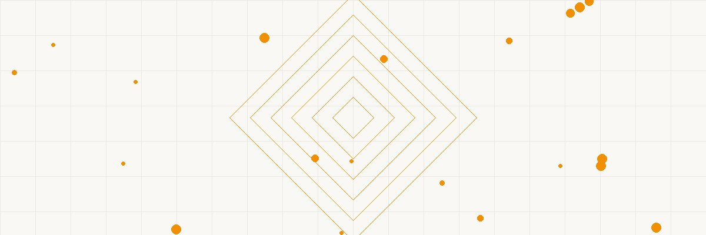

HIGH EARNER TWO-STEP ROTH IRA (Over $240K AGI) CONVERSION (Tax-Free Growth) ───────────────── ═══════════════════ ───────────────── • Can't contribute ──╲ ╱── • Tax-free growth directly to Roth ───╲ ┌───────────┐╱─── • Tax-free withdrawals • No income limit ────╳─│ BACKDOOR │─╳── • No RMDs ever on Traditional ───╱ └───────────┘╲─── • Estate planning tool • No income limit ╱ ╲ on CONVERSION STEP 1: STEP 2: RESULT: ───────────────── ═══════════════════ ───────────────── • Contribute $7K • Convert Traditional • $7K/year in Roth to Traditional to Roth immediately • Tax-free at 59½ IRA (non-deduct.) • Minimal/zero tax • Compounds for decades • After-tax money (no gains yet) • Mega backdoor: $69K ──────────────────────────────────────────────── THE MATH (couple, 30 years at 8%): $14K/year × 30 years = $420K contributed At 8% growth = $1.76M in Roth Tax on $1.76M at withdrawal: $0 Tax saved vs. taxable account: ~$400K+
FADE IN: A well-appointed kitchen in a suburban home. PRIYA SHARMA (38, software engineer, analytical mind) and her husband JAMES (40, marketing director) sit at the kitchen table with their financial planner, ELENA RUIZ (50s, CFP, zero tolerance for jargon). PRIYA Our combined AGI is $290,000. My coworker says we can't contribute to a Roth IRA because we make too much. Is that true? ELENA Technically, yes. The direct contribution limit for Roth IRAs phases out at $240,000 for married filing jointly in 2024. You're well over. JAMES So we're locked out of the best retirement account? ELENA (smiling) Of the front door, yes. But the back door is wide open. And the IRS has known about it since 2010. They've never closed it. At this point, it's effectively endorsed.
Elena pulls out a napkin and draws two arrows. ELENA The Backdoor Roth is a two-step process. Step one: you each contribute $7,000 to a Traditional IRA. There's no income limit on Traditional IRA contributions — only on the DEDUCTION. Since you have workplace 401(k)s, you can't deduct these contributions. But you can still make them. PRIYA So we put in after-tax money that we can't deduct? ELENA Exactly. Step two: the next day — or the next week, it doesn't matter — you CONVERT that Traditional IRA to a Roth IRA. There's no income limit on Roth conversions. Congress removed that limit in 2010. JAMES That's it? Contribute and convert? ELENA That's it. You contributed after-tax dollars, so the conversion is tax-free — you already paid tax on that money. Now it's in a Roth, growing tax-free forever. PRIYA And this is... legal? ELENA The IRS issued guidance in 2018 explicitly acknowledging this strategy. It's not a loophole they overlooked. It's a feature of how the code interacts. Two rules, each perfectly legal, that combine to produce a result Congress could close if they wanted to — and hasn't.
ELENA Now, there's ONE thing that can mess this up. It's called the Pro-Rata Rule. And it trips up a lot of people. JAMES What is it? ELENA When you convert a Traditional IRA to a Roth, the IRS looks at ALL your Traditional IRA balances — not just the one you're converting. If you have pre-tax money in ANY Traditional IRA, the conversion is partially taxable. She draws an example: ELENA (CONT'D) Say James has a $7,000 non-deductible Traditional IRA he wants to convert, but he ALSO has a $63,000 rollover IRA from an old 401(k). Total Traditional IRA balance: $70,000. Of that, $7,000 is after-tax and $63,000 is pre-tax. That's 10% after-tax. JAMES So I can only convert 10% tax-free? ELENA Exactly. You'd convert $7,000 but only $700 is tax-free. The other $6,300 is taxable. The IRS forces you to pro-rate. PRIYA How do we avoid that? ELENA Simple: make sure you have ZERO pre-tax money in Traditional IRAs on December 31 of the conversion year. If you have old rollovers, move them INTO your current 401(k) plan — most plans accept incoming rollovers. Once your Traditional IRA balance is zero, the conversion is 100% tax-free.
ELENA Now let me blow your mind. The regular backdoor gets you $7,000 per person per year. But if your 401(k) plan allows it, there's a MEGA Backdoor Roth that can get you up to $69,000 per year. PRIYA (eyes wide) How? ELENA The total 401(k) contribution limit for 2024 is $69,000 — that includes your employee deferrals ($23,000), your employer match, and... after-tax contributions. Most people don't know about that third bucket. She writes the breakdown: ELENA (CONT'D) Employee pre-tax/Roth deferral: $23,000 Employer match: let's say $10,000 After-tax contributions: up to $36,000 (the remainder to reach $69,000) If your plan allows after-tax contributions AND in-service Roth conversions, you contribute $36,000 after-tax to the 401(k) and immediately convert it to Roth — either within the plan or to an outside Roth IRA. JAMES Does our plan allow that? ELENA That's what we check. Not all plans do. But increasingly, large tech employers are adding this feature specifically because employees are asking for it. Priya — check your plan documents for "after-tax contributions" and "in-service withdrawals or conversions." PRIYA If it does... we could put $69,000 EACH into Roth space every year? ELENA Between the regular backdoor and the mega backdoor, potentially yes. Tax-free growth on six figures annually. The math over 20-30 years is... staggering.
Elena opens her financial planning software. ELENA Let's run the numbers. Both of you contribute $7,000 each via the regular backdoor. That's $14,000 per year into Roth accounts. At 8% average annual growth over 30 years... She shows the screen: ELENA (CONT'D) $14,000 per year × 30 years × 8% growth = approximately $1.76 million. Tax on that $1.76 million when you withdraw it in retirement? Zero. Zero federal. Zero state in most states. Zero on the growth, zero on the contributions. JAMES And if we did the mega backdoor too? ELENA If Priya can add $36K through mega backdoor: $43,000 per year going into Roth space. Over 30 years at 8%: approximately $5.4 million. Tax-free. PRIYA (quiet) Five point four million dollars... with no tax ever. ELENA Compare that to a taxable brokerage account with the same contributions and growth. At a blended 20% tax rate on gains: you'd net about $4.3 million. The Roth saves you over a million dollars in taxes. She pauses for effect. ELENA (CONT'D) And unlike Traditional IRAs and 401(k)s, Roths have NO Required Minimum Distributions. You never have to take money out. It can grow for your entire life and pass to your heirs — who then get tax-free withdrawals over 10 years.
JAMES Are there any catches on when we can access the money? ELENA Two five-year rules you should know. First: Roth contributions can always be withdrawn tax-free and penalty-free. You already paid tax on them. That $7,000 you put in? You can pull it out tomorrow if you want. PRIYA And the growth? ELENA Rule one: the Roth account itself must be open for at least five years before you can withdraw earnings tax-free. This starts from January 1 of the year you first funded ANY Roth IRA. So if you open one today, the clock started January 1, 2024. By 2029, you're clear. She holds up a second finger. ELENA (CONT'D) Rule two: conversion amounts have their own five-year clock for the 10% early withdrawal penalty. Each annual conversion starts its own five-year timer. After 59½, all these rules are irrelevant — everything comes out tax-free and penalty-free. JAMES We're 38 and 40. So by the time we retire... ELENA Everything will have been seasoning for 20+ years. Both five-year rules are satisfied many times over. For you, this is pure long-term wealth building with no practical restrictions.
ELENA Let me walk you through the annual mechanics. It's simple once you set it up. She pulls out a checklist: ELENA (CONT'D) January: Each of you contributes $7,000 to your respective Traditional IRAs. Make sure these accounts have zero prior balance — we cleared those old rollovers last year. February: Convert each Traditional IRA fully to Roth. Fill out one form with your brokerage. Some — Vanguard, Fidelity, Schwab — let you do it online in three clicks. PRIYA Should we wait between the contribution and conversion? ELENA The IRS has never specified a required waiting period. Some advisors recommend a few days to a week, just for clean paperwork. Others convert the next business day. There's no formal "step transaction doctrine" risk here — the IRS has had years to challenge it and hasn't. JAMES What about tax forms? ELENA You'll get a Form 8606 with your tax return — it tracks your non-deductible contributions and shows the conversion was non-taxable. Your CPA or tax software handles it. It adds maybe five minutes to your annual filing. ELENA (CONT'D) April: File your taxes with Form 8606. Done. Repeat every January for the rest of your working lives.
PRIYA I keep waiting for the catch. If this is so good, why hasn't Congress eliminated it? ELENA They've tried. The Build Back Better Act in 2021 included a provision to ban backdoor Roth conversions for high earners. It passed the House. It died in the Senate. JAMES Could they try again? ELENA Always possible. But here's why it's unlikely to go away: tens of millions of Americans use Roth conversions. Financial services firms lobby heavily to keep them. And any change would likely be prospective — meaning money already in Roth stays in Roth. She leans forward. ELENA (CONT'D) That's actually an argument for doing it NOW rather than later. Every dollar you get into Roth space today is protected even if the rules change tomorrow. It's like filling sandbags before the flood — the ones already in place still work. PRIYA So the worst case is they close the door going forward and we keep everything we've already converted? ELENA Exactly. There's no scenario where doing the backdoor Roth this year is the wrong move. The downside risk is essentially zero. The upside is decades of tax-free compounding.
JAMES Quick question — should we also be doing pre-tax contributions to our 401(k)s? Or convert everything to Roth? ELENA Great question. It depends on whether you think your tax rate will be higher or lower in retirement. She draws a simple comparison: ELENA (CONT'D) Pre-tax 401(k): Deduction now at your current rate (32%). Pay tax at withdrawal at your future rate. If your future rate is lower — say 22% — pre-tax wins. Roth: No deduction now. Tax-free at withdrawal. If your future rate is higher — or if tax rates rise nationally — Roth wins. PRIYA We don't know future tax rates. ELENA Nobody does. That's why the smartest play is tax diversification. Max your pre-tax 401(k) for the $23K deduction at 32%. THEN do the backdoor Roth for additional savings. You end up with both pre-tax and Roth buckets. In retirement, you draw from whichever is most tax-efficient that year. JAMES So it's not either/or. ELENA Never either/or. It's both. The backdoor Roth is ADDITIONAL savings beyond your 401(k). It's not replacing it — it's complementing it. Two engines pulling the same train.
Priya and James exchange a look — the kind couples give each other when they realize they've been leaving money on the table. PRIYA We should have started this ten years ago. ELENA The best time to start was when you first crossed the income limit. The second best time is today. Ten years of $14K per year at 8% that you missed? That's about $217,000 in a Roth you don't have. But you've got 25+ years ahead. The math still works overwhelmingly in your favor. She gathers her papers. ELENA (CONT'D) IRC Section 408A — Roth Individual Retirement Accounts. The income limits exist. The backdoor exists around them. The IRS knows. Congress knows. Your coworker who told you it was impossible? They're wrong. And they're probably sitting on the same opportunity you are. JAMES We're sending them your card. ELENA (laughing) Please do. I'll have accounts open for both of you by Friday. First contributions in January. Conversions the same week. And we do it every year until you tell me to stop. She shakes both their hands and lets herself out. Priya opens her laptop and starts searching "mega backdoor Roth" — already planning the next move. FADE OUT. — END —